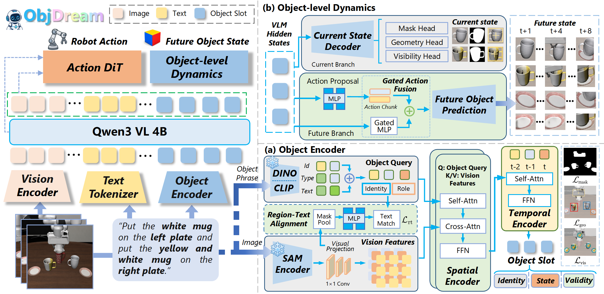

Factorized object slots
The spatio-temporal encoder separates persistent object identity from time-varying state and tracks slot validity.
Vision-language-action (VLA) models have emerged as a powerful paradigm for robotic manipulation, enabling robots to generate actions from visual observations and language instructions. However, most existing VLA models still operate on image-level visual representations inherited from pretrained vision-language backbones, while lacking fine-grained object understanding for manipulation. As a result, their robustness can degrade under out-of-distribution object layouts, clutter, and background variations. To address these limitations, we introduce ObjDream, an object-centric VLA framework centered on object-level understanding and future object state prediction. ObjDream uses a spatio-temporal object encoder to organize visual observations into temporal object slots, where persistent object identity and dynamic object state are represented through separate channels. These structured object representations are inserted into the token sequence of the vision-language model (VLM), where identity-guided routing modulates VLM attention to the corresponding object tokens. In addition, an action-conditioned object dynamics module predicts compact future object states relevant to manipulation during training, explicitly supervising object state evolution under robot actions without requiring future prediction at inference. Experiments on LIBERO, LIBERO-Plus, and RoboTwin 2.0 show that ObjDream improves generalization under diverse distribution shifts and scene perturbations. Real-world robot experiments further demonstrate that ObjDream transfers to physical manipulation settings with novel object arrangements and background changes.

The spatio-temporal encoder separates persistent object identity from time-varying state and tracks slot validity.
Object representations enter the VLM token sequence, where identity cues guide attention to relevant objects.
An action-conditioned dynamics module predicts object states during training, while inference stays direct.
Browse all supplied clips from ObjDream, π0.5, and ControlVLA across four manipulation tasks. The labels describe each recorded rollout; the clips are examples rather than the trial set used to calculate aggregate success rates.
Evaluations cover LIBERO, LIBERO-Plus, a fixed eight-task subset of RoboTwin 2.0, and four real-world manipulation tasks.
Four tasks: button pressing, block pick-and-place, two-fruit placement, and tabletop sweeping. Values are the average success rates reported in Table 3 of the paper.
Each method was adapted with the same task demonstrations. The out-of-distribution setting uses changed object arrangements and backgrounds without additional fine-tuning.